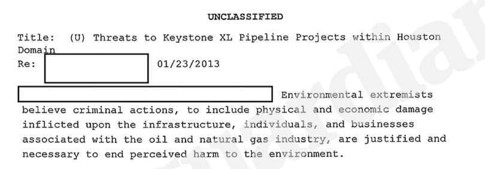
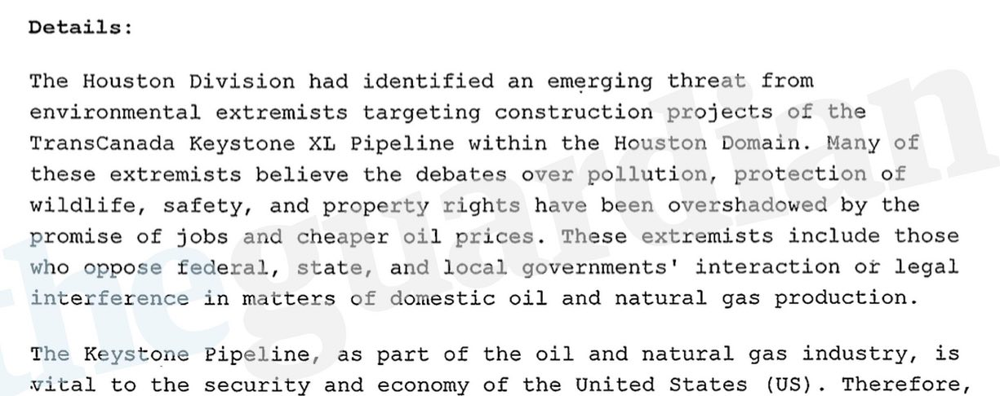

The Era of Mass Surveillance
Mass surveillance is the surveillance of the population of an entire nation or nations. Mass surveillance is carried out by governments and corporations usually on behalf of governments. Mass surveillance has been justified to fight against terrorism and to protect national security.
Contrary to popular assumption the development of stronger oversight mechanisms in the United States, leads to greater secrecy, self-regulation, and abuse of power rather than security and protection. The rise in this era of mass surveillance is a parallel systematic procedure conducted by internet companies and government entities such as the NSA, CIA, and the FBI. Now, we ask ourselves, what is this era of mass surveillance? We will break down this topic in several ways. Who conducts mass surveillance? Who allows mass surveillance? Who benefits from mass surveillance? Lastly, who gets targeted the most?
Your metadata knows you better than anyone else.
Metadata is the information about information. Communication metadata collects information about the senders and receivers. This includes, phone numbers, email addresses, screen names etc. Attached with this information is information on the time, duration and location of the communication. On top of this it stores information about the device used for the communication. This includes make, model, screen size, operating system, browser and just about anything else they can collect.
Immersion is an email metadata visualization tool built by Deepak Jagdish, Daniel Smilkov and Cesar Hidalgo researchers at MIT. This tool provides a visualization of all your emails, and their connections with each other. As well as who introduced you to each new person and who you introduced, as well as the connections between different people in your emails. With this you can visualize trends, and with mathematics you can also predict trends. Try it -> here
Metadata Explained by Privacy International
Metadata isn’t just for communications, but essentially it is collected in almost all electronic systems. For example, your financial transactions all collect metadata. Whether you’re using your card to buy in person or online, an online service like PayPal and Venmo, all your information is stored.
Metadata that is crucial and often goes without mention is photo metadata which is commonly known as EXIF data. Similarly to communication metadata, photo metadata stores everything it can.
For example this image includes, GPS location, make/model, time and even the application used to edit the photo.
Metadata is collected by every major internet company such as Google, Facebook and Twitter. Majority of the websites on the internet use the services of tracking companies. Tracking companies go beyond metadata. A popular tracking company is Google Analytics.
Google Analytics as well as hundreds of tracking companies can collect a lot of data about how people use a website/app. At its most basic, these companies can view the following:
•Time of visit, Pages visited, Time spent on each page
•Referring site details (URL the user came through to arrive at this site)
•Type of web browser
•Type of operating system (OS)
•Flash version, JavaScript support, screen resolution
•Network location and IP address.
•Scroll Depth
•Clicks on links, videos, document downloads
Privacy, Policies and Risks
The goal of massive metadata collection is to follow links and chains of communications and its relationships, locations and trends. This has been used by government officials to map out connections and target suspects based off their metadata. All the NSA,CIA and FBI programs that exploit these collections have all been backed up by vague policies that are masked under the Fourth and First Amendment. For example, we will analyze the white paper for the majority leader United States Senate published on January 19, 2006 titled, "Legal Authorities Supporting the Activities of the National Security Agency Described by the President."
This 49 page paper makes highlights two main statements. The first,
“The activities described by the President, in which he has authorized the National Security Agency to intercept international communications into or out of the United States of persons linked to al Qaeda or an affiliated terrorist organization are lawful in all respects.”(2) The second,
“The President’s use of his constitutional authority, as supplemented by statute in the Authorization for Use of Military Force enacted on September 18, 2001, is consistent with the Foreign Intelligence Surveillance Act and is also fully protective of the civil liberties guaranteed by the Fourth Amendment.”(2)
The government puts the attacks of September 11, 2001 as the basis for pursuing the NSA activities that led them to conduct “Warrantless Foreign Intelligence Surveillance Against the Enemy in the Current Armed Conflict” section three, parts A and B of the white paper.
“In 2007, Congress passed legislation replacing the Foreign Intelligence Surveillance Act’s (FISA’s) requirement of individual warrants for surveillance of cross-border communications with a more permissive approach based on programmatic approval of automated monitoring by the Foreign Intelligence Surveillance Court (FISC).”(3)
This led to the popular assumption that massive metadata collection was discontinued due to the fact that it is not authorized by the 2007 FISA amendment. Unfortunately, this policy was ignored and government entities received authorization through the Foreign Intelligence Surveillance Court directly.
“Between 2004 and 2011, when it discontinued the program, the NSA was authorized by the FISC to collect “internet metadata” under FISA’s pen register authority. It obtained FISC approval for its bulk collection of “telephony metadata” under Section 215 of the Patriot Act beginning in 2006”(3).
So far we’ve seen how the government exploits policies to pursue their practices, now we will look at an in-depth analysis of the privacy policies of the most popular online tracking companies. Are They Worth Reading? An In-Depth Analysis of Online Tracker’s Privacy Policies”(4) is research conducted Ohio State University Moritz School of Law
Their research analyzed the following types of tracking companies, “We compared privacy policies from large companies, companies that are members of self-regulatory organizations, and non- member companies, and found that many of them are silent with regard to important consumer-relevant practices including the collection and use of sensitive information and linkage of tracking data with personally-identifiable information (PII).”(4) In conclusion they stated that “the overly general requirements established in those guidelines allow companies to have compliant practices without providing transparency to users. Few companies disclose their data retention times or offer users the opportunity to access the information collected about them. The lack of consistent terminology to refer to affiliate and non-affiliate partners, and the mix of practices for first- party and third-party contexts make it challenging for users to clearly assess the risks associated with online tracking.”

sample of internet tracking companies by Ghostery
A majority of tracking companies don’t allow users being tracked to stop their data collection. Only one third of services provide an opportunity to opt out. Similarly the majority of companies do not give users access to the information collected about them. The most alarming result is that most companies write unclear, vague and often silent about their collection of sensitive information such as income range and health conditions.
What domestic threats are being ignored & Who gets targetted unfairly?
Due to the basis for the NSA’s actions for conducting mass surveillance we can agree that terrorist threats are of huge importance to this nation. During my investigation I noticed a huge terrorist threat in our country that often goes unnoticed. Daryl Johnson is a former Department of Homeland Security counterterrorism analyst who spent 15 year researching domestic terrorist groups. In 2009 he wrote an analysis on Right-Wing Extremism, titled “Rightwing Extremism: Current Economic and Political Climate Fueling Resurgence in Radicalization and Recruitment” published under the Office of Intelligence and Analysis of the United States Department of Homeland Security.
His paper warned about the rising threat of right-wing extremism. Unfortunately, the DHS repudiated his paper under pressure from conservative politicians. Wired writes,
“an especially bitter pill for him to swallow now that Wade Michael Page, a suspected white supremacist, killed at least six people at a Sikh temple in Oak Creek, Wisconsin. For Johnson, the shooting was a reminder that the government’s counterterrorism efforts are almost exclusively focused on al-Qaeda, even as non-Islamist groups threaten Americans domestically.”(5)
To continue on the facts that our government's counterterrorism efforts aren’t balanced like they should be i’d like to introduce you to the FBI’s Domestic Investigations and Operations Guide.(6)
The FBI’s DIOG carefully states its policies and activities when it comes to investigating domestic groups. Domestic groups investigated include and are often subject to priority are political and religious groups. Political groups such as the Dakota Access Pipeline and XL Keystone Pipelines have been targeted.


The Guardian: FBI violated its own rules while spying on Keystone XL opponents(6)
What can we learn about the FBI’s Domestic Investigations and Operations Guide?
The Intercept explains the FBI’s policies and how they work around them in the following “ For instance, if an undercover agent wants to pose as a university student and take classes, or if an FBI handler wants to tell an informant to attend religious services — two examples straight out of the rulebook — he or she must obtain a supervisor’s approval and attest both to the operation’s importance and to its compliance with constitutional safeguards. But all those rules go out the window if an agent decides the group is “illegitimate” or an informant spies on the group of his or her own accord.” Furthermore, the rules that require levels of approval are based on “lawful and “unlawful” purposes. Both which are very vague definitions. For example, the intercept writes, “The redacted definition of a “legitimate” group is one “formed for lawful purposes” and whose “activities are primarily lawful.” This would exclude obvious criminal networks but could also exclude activist groups if an agent decides that their “primary purpose” is to hold protests involving unlawful acts.” It is no secret that the FBI violated its own policies when investigating groups such as Green Peace, People for the Ethical Treatment of Animals and Catholic Worker. Evidence has been published by The Atlantic.